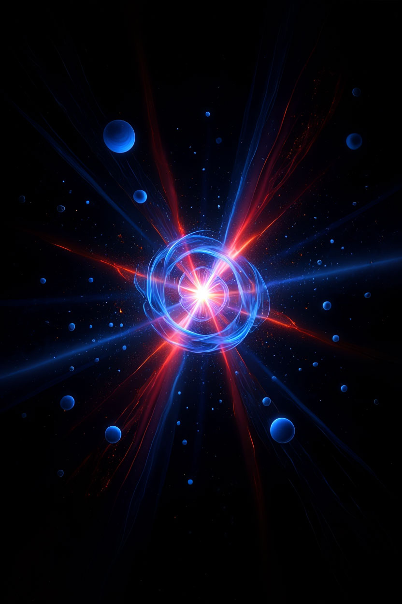

Al mirar el cielo nocturno podemos sentir que todo está en calma, como si las estrellas hubieran estado allí por
siempre. Pero la ciencia nos cuenta una historia diferente: hubo un tiempo en que
no había nada
, ni espacio, ni tiempo, ni átomos, ni luz.
Y, sin embargo, de esa nada aparente surgió todo lo que conocemos. Cuando pensamos en el origen de todo, es tentador
imaginar una explosión descomunal que lanzó materia en todas direcciones. Sin embargo, el Big Bang no fue una
explosión
en
el espacio, sino la expansión
del propio espacio
. Como si un globo se inflara no desde un punto, sino en todos los puntos al mismo tiempo, estirando cada rincón de
su superficie.
Al principio sólo había energía.
Con el enfriamiento del universo, esa energía comenzó a transformarse en partículas diminutas: quarks, electrones y
neutrinos.
Los quarks se unieron formando protones y neutrones, y éstos a su vez dieron lugar a los primeros núcleos de
hidrógeno y helio.
Era como una
sopa cósmica
donde los ingredientes iniciales bullían sin cesar.
El universo todavía era tan caliente que los electrones no podían permanecer unidos a los núcleos.
Sólo cientos de miles de años después, el universo se enfrió lo suficiente como para que aparecieran los primeros
átomos estables.
Hace unos 13.800 millones de años, toda la energía del universo estaba concentrada en un estado inimaginablemente denso y caliente. No había átomos, ni estrellas, ni galaxias: solo un plasma de partículas elementales y radiación. En los primeros instantes, la temperatura alcanzaba billones de grados; tanto que protones y neutrones apenas podían formarse, y los electrones se movían libres en un mar incandescente.
A medida que el universo se expandía, también se enfriaba. En los primeros minutos, los protones comenzaron a unirse con neutrones, creando núcleos de hidrógeno, helio y trazas de litio. Sin embargo, el calor aún era tan extremo que los electrones no podían “asentarse” alrededor de esos núcleos. Fue necesario esperar casi 380.000 años para que el universo se enfriara lo suficiente: entonces, por primera vez, nacieron átomos completos. A este proceso se lo llama recombinación . La luz, hasta ese momento atrapada en el plasma denso, pudo finalmente liberarse y viajar: esa luz primigenia es la que hoy observamos como el fondo cósmico de microondas .
Cuando los electrones finalmente se unieron a los núcleos, el universo se volvió transparente y la luz pudo viajar
libremente.
Esa primera luz todavía nos rodea hoy: es la llamada
radiación cósmica de fondo
.
Podemos imaginarla como el eco luminoso del gran nacimiento, un susurro que nos recuerda que todo empezó en una
explosión de energía.
Los telescopios modernos, como el satélite Planck, han podido detectar este eco con enorme precisión, mostrando que el universo conserva la memoria de sus primeros instantes.
Pero no todas las teorías coinciden en que hubo un inicio único. Algunos científicos, como Fred Hoyle, defendieron la hipótesis del “universo estacionario”: en vez de un principio absoluto, habría una creación continua de materia en un cosmos eterno. Y otros han explorado la idea de que una fluctuación cuántica —un parpadeo del vacío— pudo ser la semilla de nuestro universo.
Sea cual sea la explicación última, lo cierto es que desde aquella chispa inicial el universo no ha dejado de expandirse. Lo vemos en el corrimiento al rojo de las galaxias: cuanto más lejos están, más rápido se alejan, como si todo formara parte de una marea imparable.
De aquel comienzo ardiente nacieron las semillas de todo lo que conocemos. Con el tiempo, la materia se agrupó en nubes, esas nubes formaron estrellas, y las estrellas, al morir, crearon los elementos que hoy forman parte de ti y de mí.
El universo empezó como un fogonazo de energía, pero su historia es también la nuestra.
Preguntarnos por su nacimiento es, de algún modo,
preguntarnos por nuestro propio origen
.
